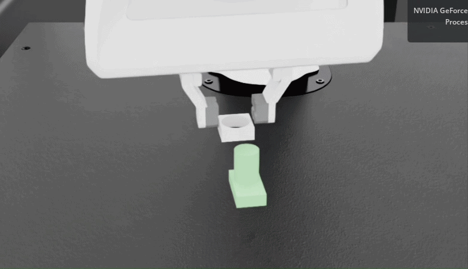
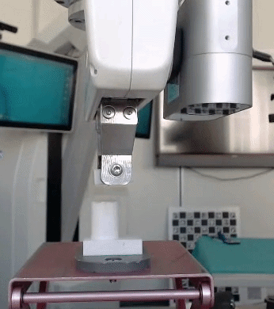
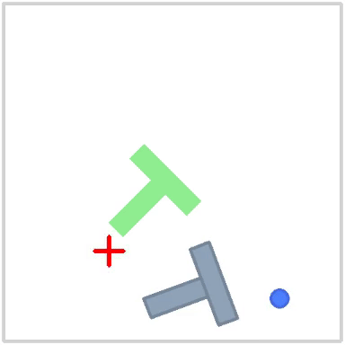

Robot learning
Reinforcement and imitation learning, behavior cloning, action chunking, multimodal demonstrations, and policy evaluation.
Robotics · Machine Learning
M.Sc. candidate in Robotic Systems Engineering at RWTH Aachen University.
I work on robot learning, manipulation, and autonomous systems. My current research focuses on learning force aware policies for contact rich assembly, with an emphasis on controlled evaluation, robustness, and transfer from simulation to physical systems.
At ZEISS Corporate Research & Technology, I have developed reinforcement learning policies for robotic manipulation and deployment workflows for Franka hardware. Previously, I worked on sensor fusion and localization at RWTH Aachen and on aerial robotics at IIIT Hyderabad.
Completed master’s thesis research on force aware reinforcement learning for contact rich assembly at ZEISS Corporate Research & Technology.
Won the Reply × BEST Aachen “AI Agents in Action” coding challenge.
Completed a robot learning internship at ZEISS, working on PPO, domain randomization, and transferring policies from simulation to a physical robot.
Achieved the best score in RWTH Aachen’s reinforcement learning car racing competition.
I am interested in learning systems that remain reliable when they leave simulation and encounter uncertain physical environments.
Reinforcement and imitation learning, behavior cloning, action chunking, multimodal demonstrations, and policy evaluation.
Contact rich assembly, force feedback, domain randomization, Cartesian impedance control, and deployment on physical robots.
Sensor fusion, Kalman filtering, localization, uncertainty analysis, and systematic experimental evaluation.
Carl Zeiss AG · Corporate Research & Technology
Developed force aware reinforcement learning policies for contact rich assembly in Isaac Lab. Designed controlled robustness experiments and evaluated how the robot configuration affects force and torque bias on Franka hardware.
View assembly experiments →Carl Zeiss AG · Corporate Research & Technology
Trained PPO manipulation policies with PyTorch, Isaac Gym, and Isaac Lab, then built a deployment workflow with ROS and FrankaPy that included runtime logging and safety checks.
View simulation transfer results →Institute of Automatic Control · RWTH Aachen University
Evaluated Kalman and unscented Kalman filters through reproducible localization experiments in Python and MATLAB.
Robotics Research Center · IIIT Hyderabad
Developed TD3 quadrotor control policies, evaluated UWB localization in DJI flight tests, and contributed to research on waypoint navigation and collision avoidance for multiple UAVs.
Recent work in physical robot learning and imitation learning.


Reinforcement learning policies, controlled robustness experiments, and transfer from simulation to a Franka Panda.

A Behavior Transformer using visual encoders, action clustering, and temporal sequence modeling.
A TD3 agent for track navigation and cone avoidance; best score in the course competition.
IEEE IECON 2023
H. Kumar, D. Datta K., J. V. Pushpangathan, H. Kandath, and A. Dhabale.
DOI →IFAC PapersOnLine 2022 · Best Presentation Award
Himanshu, H. Kandath, and J. V. Pushpangathan.
DOI →Springer 2022 · Best Paper Award, ICICV 2021
Himanshu, A. Singha, A. Kumar, and A. K. Ray.
DOI →RWTH Aachen University · Germany
Thesis: Learning Force Aware Policies for Contact Rich Assembly Tasks Using Reinforcement Learning.
National Institute of Technology Sikkim · India
Thesis: Visual Scene Understanding Using Deep Learning.
Learning: PyTorch, TensorFlow, PPO, TD3, SAC, behavior cloning, and ACT style action chunking
Robotics: ROS/ROS2, Isaac Lab, Isaac Sim, Isaac Gym, MuJoCo, PyBullet, Webots, FrankaPy, LeRobot
Engineering: Python, MATLAB/Simulink, C++, Git, Linux, Docker, LaTeX